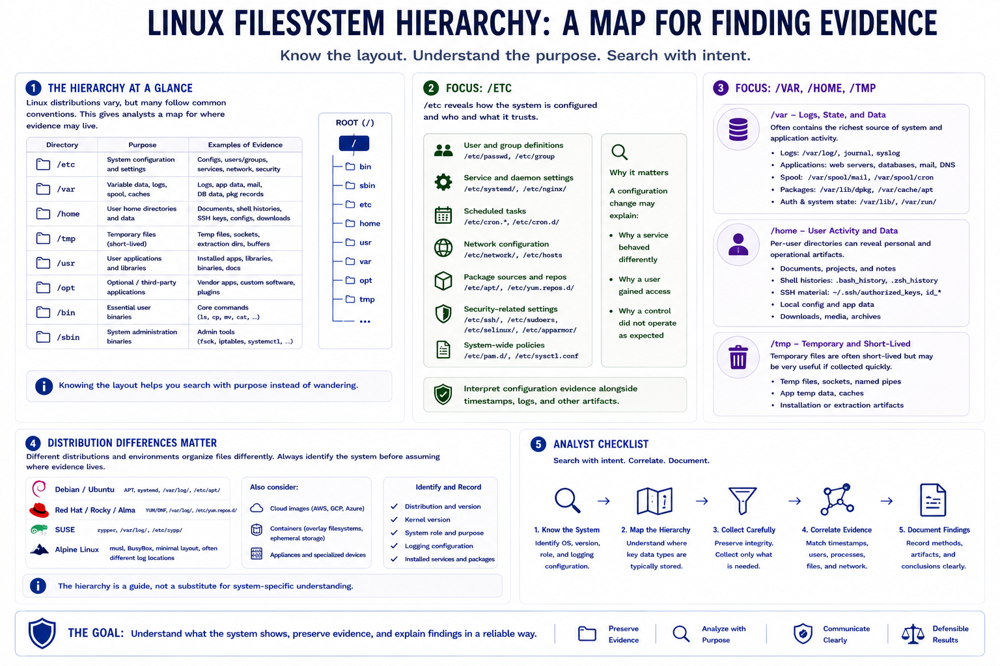

Linux System Layout
Connecting to LMS... Progress: in progress

Narration
Understanding the Linux filesystem hierarchy gives analysts a map for where evidence may live. Linux distributions vary, but many follow common conventions. Configuration is often under /etc, logs and variable runtime data under /var, user data under /home, temporary files under /tmp, installed applications under /usr or /opt, and administrative or system binaries under /bin and /sbin. Knowing the layout helps analysts search with purpose instead of wandering.
/etc is especially important because it can reveal system configuration, user and group definitions, service settings, scheduled task definitions, network configuration, package sources, and security-related settings. A change in configuration may explain why a service behaved differently, why a user gained access, or why a control did not operate as expected. Configuration evidence should be interpreted alongside timestamps and logs.
/var often contains logs, application data, spool files, caches, package records, and service-specific state. Web servers, databases, mail services, package managers, and authentication systems may all leave evidence there. /home can contain user documents, shell histories, SSH material, local configuration, downloads, and application-specific artifacts. /tmp may contain temporary files that are short-lived but sometimes useful when collected quickly.
Distribution differences matter. Debian, Ubuntu, Red Hat, Rocky, SUSE, Alpine, cloud images, containers, and appliances may organize logs, packages, network settings, and service configuration differently. The analyst should identify the distribution, version, system role, and logging configuration before assuming where evidence must be. The hierarchy is a guide, not a substitute for system-specific understanding.